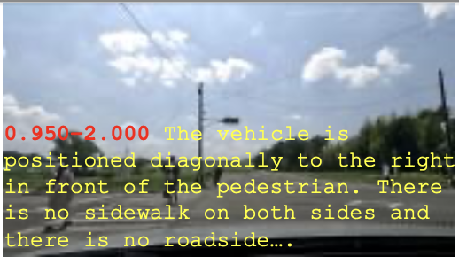
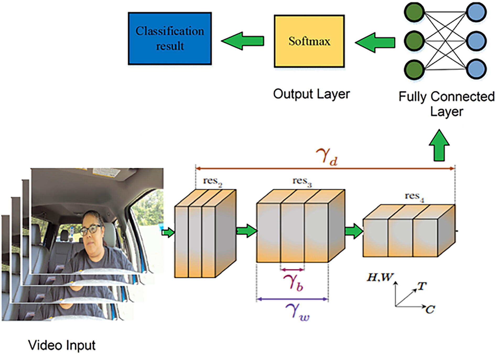
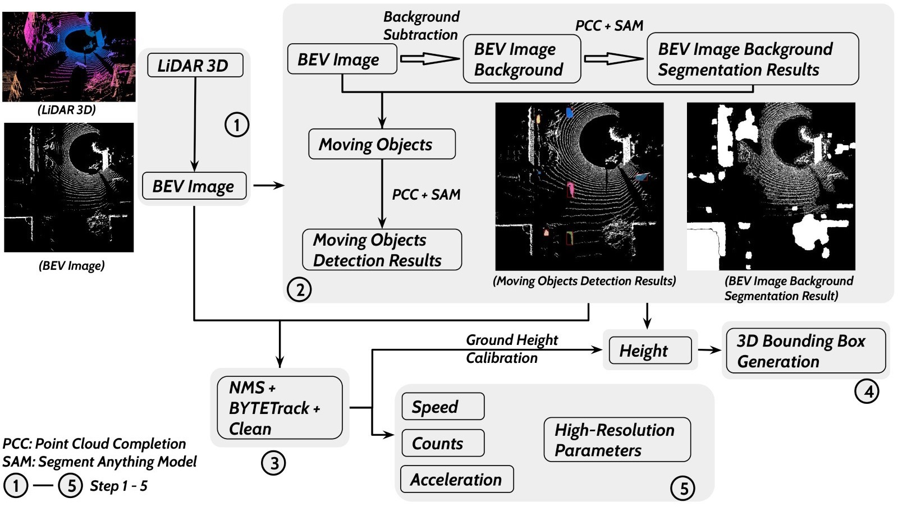

About
I am an Assistant Professor at the
North Dakota State University. An ingenious and
resourceful Transportation Data Scientist with a proven track record of success
in research and hands-on experience developing cutting-edge database solutions,
statistical modeling, data products, and computer vision systems aimed at improving
transportation system management and operations. Has worked as an architect and
application developer on a variety of projects that required the use of data mining
and machine learning models to solve large-scale, complex, and difficult transportation problems.
I'm broadly interested in computer vision and machine learning.
My research involves visual reasoning, vision and language, image generation,
air taxis, naturalistic studies, and autonomous vehicles.
I received my PhD from University of Missouri-Columbia, advised by
Yaw Adu-Gyamfi.
News
[12/13/2024] Congratulations to Blessing for getting his first paper accepted for publication.
[12/10/2024] Congratulations! The SMART Lab was awarded NAIRR Pilot Project Grant.
[07/08/2024] Congratulations! The SMART Lab received a seed grant from AI SUSTEIN.
[07/02/2024] Congratulations! The SMART Lab was awarded an EDRF grant.
[06/10/2024] Excited to welcome two new Ph.D students (Blessing and Joshua) into my lab.
[12/29/2023] Congratulations! Excited to be joining North Dakota State University as an Assistant Professor.
[10/27/2023] Congratulations! Our Paper got accepted to 2023 NeurIPS workshop, Gaze Meet Machine Learning.
[09/25/2023] Congratulations! Three of our papers got accepted to TRB 2024.
[08/25/2023] Congratulations! Our Paper got accepted to IEOM International Conference in Detroit.
[08/16/2023] Congratulations! Our paper on Classification of Human Driver Distraction was accepted to HFES 67th Intl. Annual Conference.
[08/15/2023] Congratulations! Our paper on Gaze-Guided Graph Neural Network as accepted to 2024 IEEE/CVF WACV.
[08/01/2023] Excited to be joining the University of Arizona as an Assistant Research Professor.
[04/17/2023] Two papers accepted for presentation at CVPR 2023.
[01/01/2023] Join Northwestern University as a Postdoctoral Student under the Supervision of Dr. Ulas Bagci
[12/17/2022] Graduated with a PhD from the University of Missouri-Columbia
[11/07/2022] Driver Maneuver Detection and Analysis using Time Series Segmentation and Classification was accepted for publication
[10/12/2022] Mobile Sensing for Multipurpose Applications in Transportation was accepted for publication
[06/20/2022] Oral presentation at CVPR: A Region-Based Deep Learning Approach to Automated Retail Checkout
Publications
DivNEDS: Diverse Naturalistic Edge Driving Scene Dataset for Autonomous Vehicle Scene Understanding
John Owusu Duah, Armstrong Aboah,Stephen Osafo-Gyamfi.
IEEE Access
Low-Light Image Enhancement Framework for Improved Object Detection in Fisheye Lens Datasets
Dai Quoc Tran, Armstrong Aboah,Yuntae Jeon, Maged Shoman, Minsoo Park, Seunghee Park.
IEEE / CVF Computer Vision and Pattern Recognition Conference Workshop (CVPR 2024)

Enhancing traffic safety with parallel dense video captioning for end-to-end event analysis
Maged Shoman, Dongdong Wang, Armstrong Aboah,Mohamed Abdel-Aty.
IEEE / CVF Computer Vision and Pattern Recognition Conference Workshop (CVPR 2024)
3D Object Detection and High-Resolution Traffic Parameters Extraction Using Low-Resolution LiDAR Data
Linlin Zhang, Xiang Yu, Armstrong Aboah,Yaw Adu-Gyamfi.
TRB
GazeGNN: A Gaze-Guided Graph Neural Network for Chest X-ray Classification
Bin Wang, Hongyi Pan, Armstrong Aboah,Zheyuan Zhang, Elif Keles, Drew Torigian, Baris Turkbey, Elizabeth Krupinski, Jayaram Udupa, Ulas Bagci.
WACV 2024 [Early Accept]

Classification of Human Driver Distraction Using 3D Convolutional Neural Networks
Kelvin Kwakye,Armstrong Aboah,Younho Seong, Sun Yi.
Proceedings of the Human Factors and Ergonomics Society Annual Meeting
Image2PCI--A Multitask Learning Framework for Estimating Pavement Condition Indices Directly from Images
Neema Jakisa Owor,Hang Du,Abdulateef Daud,Armstrong Aboah,Yaw Adu-Gyamfi.
103rd Annual Conference of the Transportation Research Board (TRB), Washington, DC

3D Object Detection and High-Resolution Traffic Parameters Extraction Using Low-Resolution LiDAR Data
Linlin Zhang, Xiang Yu, Armstrong Aboah,Yaw Adu-Gyamfi.
103rd Annual Conference of the Transportation Research Board (TRB), Washington, DC
Edge Computing-Enabled Road Condition Monitoring: System Development and Evaluation
Abdulateef Daud,Mark Amo-Boateng,Neema Jakisa Owor,Armstrong Aboah,Yaw Adu-Gyamfi.
103rd Annual Conference of the Transportation Research Board (TRB), Washington, DC
DeepSegmenter: Temporal Action Localization for Detecting Anomalies in Untrimmed Naturalistic Driving Videos
Armstrong Aboah,
Ulas Bagci,Abdul Rashid Mussah,Neema Jakisa Owor,Yaw Adu-Gyamfi.
IEEE / CVF Computer Vision and Pattern Recognition Conference Workshop (CVPR 2023)
Real-time Multi-Class Helmet Violation Detection Using Few-Shot Data Sampling Technique and YOLOv8
Armstrong Aboah,
Bin Wang, Ulas Bagci,Yaw Adu-Gyamfi.
IEEE / CVF Computer Vision and Pattern Recognition Conference Workshop (CVPR 2023)
GAZESAM: Interactive Image Segmentation with Eye Gaze and Segment Anything Model
Bin Wang,
Armstrong Aboah,
Zheyuan Zhang, Ulas Bagci.
Neural Information Processing Systems (NeurIPS workshop 2023)
Driver maneuver detection and analysis using time series segmentation and classification
Armstrong Aboah,
Yaw Adu-Gyamfi et al.
Journal of Transportation Engineering Part A: Systems
Smartphone-based pavement roughness estimation using deep learning with entity embedding
Armstrong Aboah,
Yaw Adu-Gyamfi
Advances in Data Science and Adaptive Analysis
A vision-based system for traffic anomaly detection using deep learning and decision trees
Armstrong Aboah*, Maged Shoman*, Vishal Mandal, Yaw Adu-Gyamfi et al.
IEEE / CVF Computer Vision and Pattern Recognition Conference Workshop (CVPR 2021)
A region-based deep learning approach to automated retail checkout
Maged Shoman*, Armstrong Aboah*, Yaw Adu-Gyamfi et al.
IEEE / CVF Computer Vision and Pattern Recognition Conference Workshop (CVPR 2022)
Deep learning framework for predicting bus delays on multiple routes using heterogenous datasets
Maged Shoman, Armstrong Aboah, Yaw Adu-Gyamfi
Journal of Big Data Analytics in Transportation
Pavement Condition Prediction
Ashkan Behzadian, Tanner Wambui Muturi, Amanda Mullins, Armstrong Aboah, Yaw Adu-Gyamfi et al.
arXiv
Mobile sensing for multipurpose applications in transportation
Armstrong Aboah, Michael Boeding, Yaw Adu-Gyamfi
Journal of Big Data Analytics in Transportation
GC-GRU-N for Traffic Prediction using Loop Detector Data
Maged Shoman, Armstrong Aboah,Abdulateef Daud, Yaw Adu-Gyamfi
IEEE Transactions on Intelligent Transportation Systems
Side Projects
movie-recommendation-system
A simple NLP algorithm for recommending movies.
In this project I developed a simple movie recommendation
system, that returns the top 10 movies base on a given movie title.
naturalistic-driving-studies-nds
The goal of this Project was to understand the driver's environment in a naturalistic settings.
camvid-competition
This repository contains implementations of multiple deep learning models
(U-Net, FCN32 and SegNet) for multiclass semantic segmentation of the CamVid dataset.
multclass-weather-classification
This project involves a multiclass classification of the weather. Three main multi-classes were considered.
They are '[day,rainy]', '[night,clear]', and '[day,clear]'. The project utilizes image data sourced from smarphone camera.
My Calendar (Time Zone is CDT)